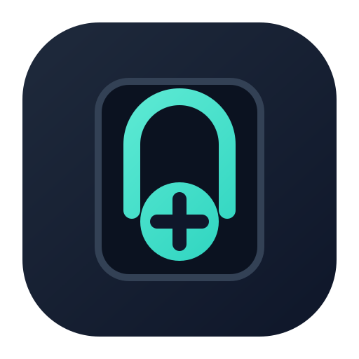
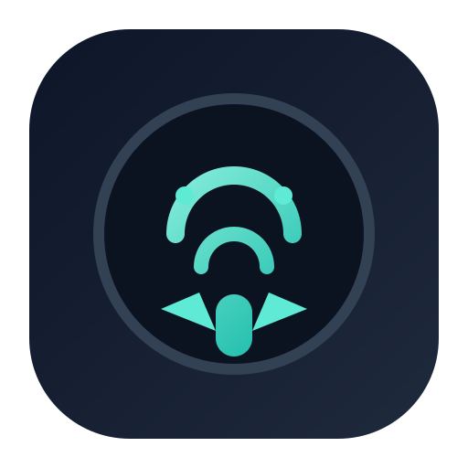
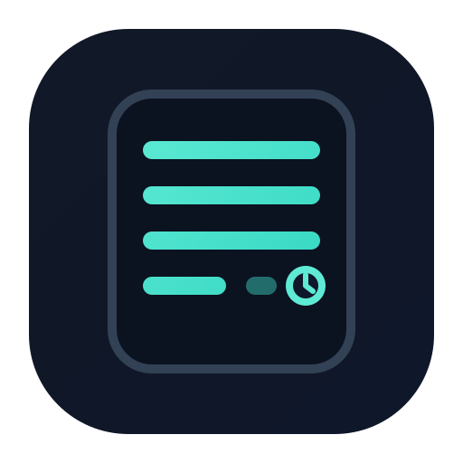

Stethoscope silhouette + medical plus for trust and clinical utility.

Friendly owl motif for "scribe/assistant" personality while staying professional.

Three clean text lines + a broken fourth line to represent documentation in progress.